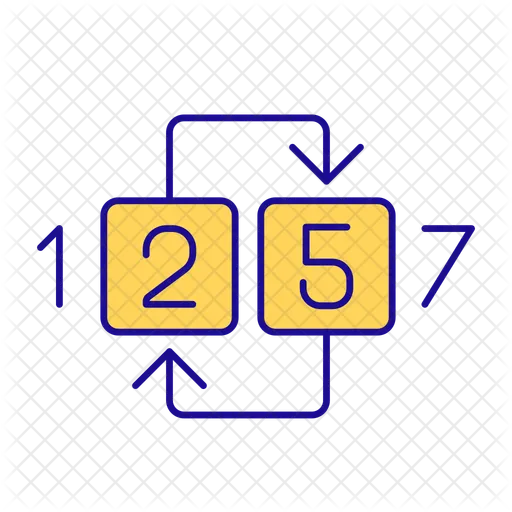
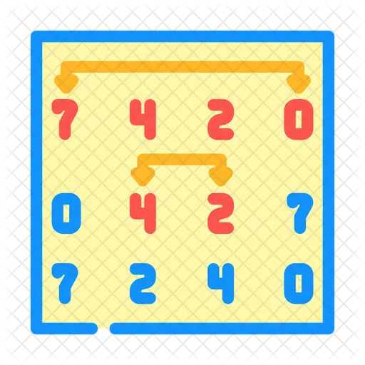
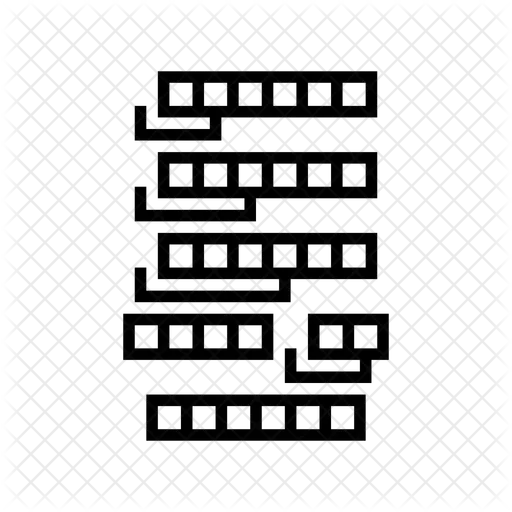
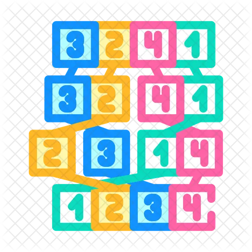
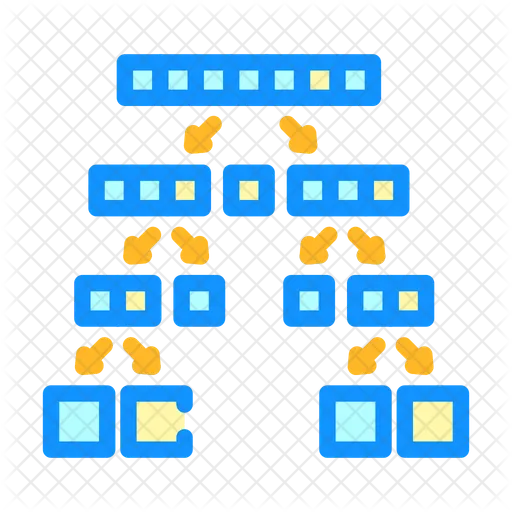
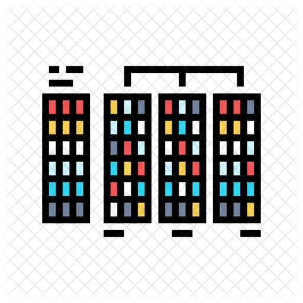
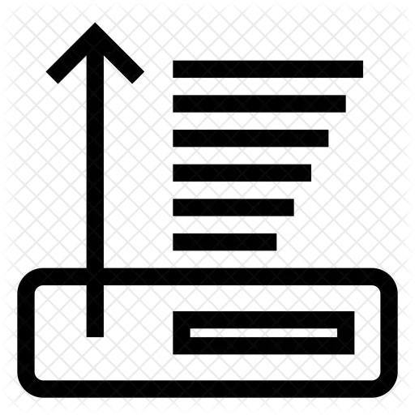

- Refresh
- Contact
-
Share
-
-
Follow me
-
- Feedback
- Install
Explore different sorting algorithms and understand how they work, step-by-step. Click on any algorithm below to start the visualization!

Compares adjacent elements and swaps them if they're in the wrong order.

Finds the smallest element in the array and places it at the front.

Builds the sorted array by inserting elements in their correct position.

Divides the array, sorts them, and merges them back together.

Uses a pivot to partition the array and sorts each partition.
Transforms the array into a heap structure and sorts it.

Sorts numbers by processing individual digits from least to most significant.

Sorts elements by comparing elements at a gap and reducing the gap over time.
Summary of all the sorting algorithms their worst, average and best case complexities in one table.
A sorting algorithm is a method for reorganizing a collection of items such as numbers, letters, or records into a specific order, typically ascending or descending. Sorting is one of the most fundamental operations in computer science, forming the backbone of efficient data retrieval, search operations, and data processing pipelines.
Whether you are a student learning data structures for the first time, a developer preparing for technical interviews, or a professional brushing up on algorithm fundamentals, understanding sorting algorithms is essential. Each algorithm has unique properties in terms of time complexity, space complexity, and real-world applicability.
Sorting algorithms can be difficult to grasp from text or pseudocode alone. That's exactly why EasySorting was created to let you see each algorithm in action, pass by pass, comparison by comparison. You can:
EasySorting covers 8 major sorting algorithms, each explained with history, time and space complexity, pseudocode, and step-by-step visualization:
Use this quick comparison table to see how each algorithm stacks up on time complexity, space complexity, stability, and whether it sorts in place. Click any algorithm to open its interactive visualization.
| Algorithm | Best | Average | Worst | Space | Stable | In-place |
|---|---|---|---|---|---|---|
| Bubble Sort | O(n) | O(n²) | O(n²) | O(1) | Yes | Yes |
| Selection Sort | O(n²) | O(n²) | O(n²) | O(1) | No | Yes |
| Insertion Sort | O(n) | O(n²) | O(n²) | O(1) | Yes | Yes |
| Merge Sort | O(n log n) | O(n log n) | O(n log n) | O(n) | Yes | No |
| Quick Sort | O(n log n) | O(n log n) | O(n²) | O(log n) | No | Yes |
| Heap Sort | O(n log n) | O(n log n) | O(n log n) | O(1) | No | Yes |
| Radix Sort | O(nk) | O(nk) | O(nk) | O(n+k) | Yes | No |
| Shell Sort | O(n log n) | O(n3/2) | O(n²) | O(1) | No | Yes |
Want the full breakdown? See the Sorting Algorithm Complexity Summary table with definitions of in-place and stable sorting.
Here's the part most courses skip: none of the major programming languages ship a plain textbook algorithm. Production sort functions are hybrids that combine several of the algorithms you can visualize on this site:
Array.prototype.sort has used
Timsort since 2018 - a hybrid of merge sort and insertion sort that hunts for
already-sorted runs in your data.sorted() and list.sort() use
Timsort too - in fact it was invented for Python by Tim Peters in 2002 before
other languages adopted it.Arrays.sort uses a dual-pivot quicksort for
primitives, but switches to Timsort for object arrays, because object sorting
must be stable.std::sort is typically introsort - quicksort
that falls back to heap sort when recursion gets too deep, and finishes small ranges with
insertion sort.Notice the pattern: insertion sort, often dismissed as a "slow beginner algorithm", appears inside nearly every production hybrid, because for small arrays its low overhead beats the clever algorithms. And merge sort lives on inside Timsort because it is stable. The "best" algorithm isn't one algorithm at all - it's knowing when each one wins, which is exactly what the visualizers here help you build an intuition for.
It depends on the data. For random data, quick sort is usually fastest in practice thanks to cache-friendly partitioning. Merge sort guarantees O(n log n) even in the worst case. For nearly sorted data, insertion sort approaches O(n) and beats them both. And for bounded integer keys, radix sort can beat every comparison sort.
Because it is the clearest possible introduction to the core ideas - comparisons, swaps, passes, and loop invariants - in about five lines of code. You learn to reason about algorithms on bubble sort, then apply that reasoning to the ones that actually get used.
A stable sort keeps items with equal keys in their original relative order. That matters whenever you sort by more than one field - for example, sorting employees by department after sorting by name only works correctly if the second sort is stable. Merge sort, insertion sort, and Timsort are stable; quick sort, heap sort, and selection sort are not.
Not by comparing elements - O(n log n) is a proven mathematical lower bound for comparison-based sorting. But algorithms that don't compare, like counting sort and radix sort, sidestep the bound entirely and reach linear time when the key range is limited.
Click on any algorithm above to begin the interactive visualization. Happy Learning!